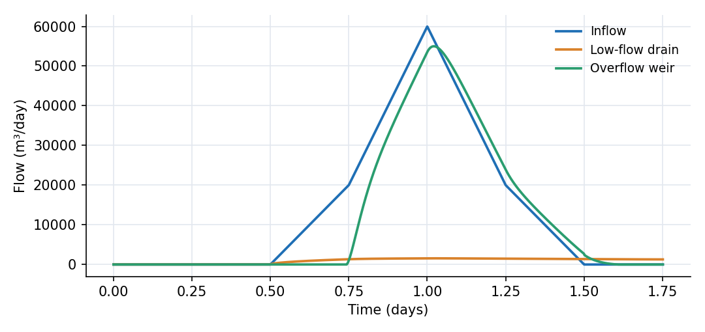
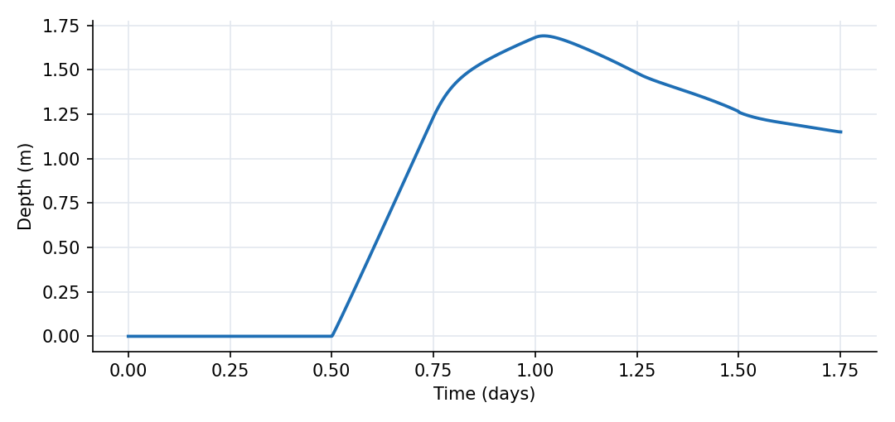

What this model represents
Stormwater design is not a parameter-estimation problem. The unknowns here are physical choices that an engineer can change: the diameter of a low-flow drain and the capacity of an overflow weir. A larger outlet lowers the pond level but can send a larger peak flow downstream and usually costs more. A smaller outlet controls discharge but needs more temporary storage. This example asks OpenHydroQual's genetic algorithm to find a useful compromise.
The pond receives a synthetic 25,000 m³ design-storm hydrograph. Its initial design has a 0.12 m drain and a weir coefficient of 160,000 m^1.5/day. The two design variables are deliberately linked to real model properties with setasparameter; no observations or likelihood function are involved.
How it works
The pond storage is
S = 1500 d²
where S is volume in m³ and d is water depth in m. The low-flow drain follows the drain_pipe relation
Q_d = 86400 · 3.47 · D² · [H − z_d]₊^0.5 / (K + 1)^0.5
with diameter D, pond head H, drain elevation z_d = 100 m and head-loss coefficient K = 12. The overflow weir follows
Q_w = a · [H − 101.2]₊^1.5
where a is the second design variable. Both flows are in m³/day.
The genetic algorithm minimizes the sum of five dimensionless terms:
J = max(Q_d)/50000 + max(Q_w)/50000 + 100 ∫[d − 1.8]₊ dt + 0.1(D/0.25)² + 0.05(a/300000)
The first two terms add to the normalized maximum total outlet flow because both outlet ratings increase with pond depth and peak at the same time. The third makes 1.8 m a soft maximum-depth constraint. The last two are simple construction-cost proxies. Their coefficients only establish the tradeoff for this tutorial; they are not currency.
drain_diameter is searched from 0.05 to 0.25 m and weir_capacity from 80,000 to 300,000 m^1.5/day. The file uses 20 designs per generation, 15 generations and two worker threads. To run the optimization headlessly from this folder:
OHQ-GA design_optimization.ohq ./
The same operation is available as Inverse Run in the interface. OHQ-GA writes the population history to GA_output.txt, then runs the model once more with the best design and writes the usual model outputs.
What to look for in results
The ordinary forward run shows the starting design. Its pond depth peaks at 1.691 m on day 1.021. The low-flow drain peaks at 1,557 m³/day and the weir at 54,993 m³/day, giving a combined peak of 56,550 m³/day. The inflow peak is 60,000 m³/day.
One verified 15-generation run with the current OHQ-GA executable found:
| Starting design | GA design | |
|---|---|---|
| Drain diameter | 0.120 m | 0.0532 m |
| Weir coefficient | 160,000 | 118,646 |
| Maximum pond depth | 1.691 m | 1.800 m |
| Maximum total outflow | 56,550 m³/day | 55,502 m³/day |
| Objective value | 1.181 | 1.135 |
The optimized pond rises almost exactly to the 1.8 m limit. This is the expected signature of an efficient constrained design: unused depth would permit a smaller or cheaper outlet, while additional depth is strongly penalized. The GA selects a drain near its lower bound because peak discharge is dominated by the overflow weir during this short storm. The low-flow drain is retained to empty the pond after the event, but its drawdown benefit occurs mostly outside the 1.75-day design window.
The GA is stochastic. A repeat run may return slightly different values, but it should place the maximum depth close to 1.8 m and substantially reduce the weir coefficient from its starting value.
Assumptions and limitations
- The inflow is a synthetic triangular hydrograph, not a rainfall-runoff calculation. Real design work should evaluate several storms and antecedent conditions.
- The objective weights and cost terms are dimensionless teaching values. Replace them with project-specific downstream criteria, risk penalties and life-cycle costs.
- The 1.8 m depth criterion is a soft penalty. A regulatory hard constraint should be checked explicitly after optimization and with a suitable freeboard allowance.
- The receiving channel is a fixed-head boundary, so tailwater does not affect either outlet rating in this model.
- The simulation ends at day 1.75 to cover the storm and its peak response. It does not test full drawdown time, consecutive events or long-term water balance.
- No emergency spillway or outlet blockage is represented. Those checks remain essential in a real detention design.
- Fifteen generations are enough for a short tutorial but not a convergence guarantee. Increase the population and generation count, repeat the run with multiple random seeds, and compare the best designs before making an engineering decision.
Model diagram
Hover a block or link to see its name and type. Arrows show the positive flow direction.
Components
Click a component to see every property set in the model file, with units and meaning.
Blocks 2
Storage compartments: each holds water (and dissolved or particulate mass) and has a state that evolves in time.
Detention_PondPond · Pond_PluginDry detention pond with floor elevation 100 m and stage-storage relation S = 1500·d². It receives the 25,000 m³ synthetic design-storm hydrograph from design_storm.csv.
Pond: Stormwater pond
| Property | Value | Unit | Meaning |
|---|---|---|---|
| Initial Storage | 0 | m3 | Initial volume of water stored in the pond at the beginning of the simulation. |
| The coefficient (α) in the rating curve S = α d^β | 1500 | The coefficient (α) in the pond volume-depth relationship: Storage = alpha * depth^beta. | |
| The exponent (β) in the rating curve S = α d^β | 2 | The exponent (β) in the pond volume-depth relationship: Storage = alpha * depth^beta. | |
| Bottom elevation of pond | 100 | m | |
| Inflow rate time series | design_storm.csv | m^3/day | The time series containing the inflow rate into the pond |
Receiving_Channelfixed_headFixed-head receiving boundary at elevation 98.5 m. It collects both outlet flows without feeding stage changes back into the pond.
fixed_head: Fixed-head boundary
| Property | Value | Unit | Meaning |
|---|---|---|---|
| Initial Storage | 1000000 | m3 | |
| Head | 98.5 | m | |
| area | 1 | m2 |
Links 2
Connections that move water (and the mass it carries) between blocks.
Low_Flow_Draindrain_pipe · Pond_PluginCircular drain from the pond floor. Its diameter is controlled by drain_diameter; a head-loss coefficient of 12 represents entrance, pipe and exit losses.
drain_pipe: Drain pipe
| Property | Value | Unit | Meaning |
|---|---|---|---|
| Crest Elevation | 100 | m | |
| Head-loss coefficient | 12 | ||
| Pipe Diameter | 0.12 | m |
Overflow_Weirwier · Pond_PluginOverflow outlet with crest elevation 101.2 m and exponent 1.5. Its coefficient is controlled by weir_capacity.
wier: Weir based on a power-law rating curve
| Property | Value | Unit | Meaning |
|---|---|---|---|
| Crest Elevation | 101.2 | m | |
| Coefficient alpha in Q=alpha*(h-z_0)^beta (SI-day units) | 160000 | ||
| Exponent beta in Q=alpha*(h-z_0)^beta | 1.5 |
Model parameters 2
Quantities flagged for estimation, with their search ranges or priors.
drain_diameterParameterDesign variable for the low-flow drain diameter. The GA searches 0.05 to 0.25 m; its starting value in the file is 0.12 m.
Parameter: Parameter
| Property | Value | Unit | Meaning |
|---|---|---|---|
| Lower Limit | 0.05 | ||
| Upper Limit | 0.25 | ||
| Value | 0.12 | ||
| Prior distribution | normal |
weir_capacityParameterDesign variable for the overflow-weir coefficient. The GA searches 80,000 to 300,000 m^1.5/day; its starting value in the file is 160,000 m^1.5/day.
Parameter: Parameter
| Property | Value | Unit | Meaning |
|---|---|---|---|
| Lower Limit | 80000 | ||
| Upper Limit | 300000 | ||
| Value | 160000 | ||
| Prior distribution | normal |
Objective functions 5
Quantities the optimizer minimizes.
Drain_PeakObjective_FunctionNormalized maximum drain flow, max(Q_drain)/50,000, included in the downstream peak-flow objective.
Objective_Function: Objective function
| Property | Value | Unit | Meaning |
|---|---|---|---|
| Expression | flow/50000 | ||
| Calculation method | maximum | ||
| Weight | 1 | ||
| Exceedance probability | 0 |
Weir_PeakObjective_FunctionNormalized maximum overflow flow, max(Q_weir)/50,000. Since both outlets increase monotonically with pond depth, their maxima occur together and their sum is the maximum total outflow.
Objective_Function: Objective function
| Property | Value | Unit | Meaning |
|---|---|---|---|
| Expression | flow/50000 | ||
| Calculation method | maximum | ||
| Weight | 1 | ||
| Exceedance probability | 0 |
Depth_ExceedanceObjective_FunctionLarge penalty, 100 times the time integral of depth above 1.8 m, which makes 1.8 m a soft design limit.
Objective_Function: Objective function
| Property | Value | Unit | Meaning |
|---|---|---|---|
| Expression | 100*_pos(depth-1.8) | ||
| Calculation method | integrate | ||
| Weight | 1 | ||
| Exceedance probability | 0 |
Drain_CostObjective_FunctionDimensionless drain cost proxy, 0.1·(D/0.25)². It is a teaching-scale surrogate, not a monetary estimate.
Objective_Function: Objective function
| Property | Value | Unit | Meaning |
|---|---|---|---|
| Expression | 0.1*(pipe_diameter/0.25)^2 | ||
| Calculation method | maximum | ||
| Weight | 1 | ||
| Exceedance probability | 0 |
Weir_CostObjective_FunctionDimensionless weir cost proxy, 0.05·a/300,000. It is a teaching-scale surrogate, not a monetary estimate.
Objective_Function: Objective function
| Property | Value | Unit | Meaning |
|---|---|---|---|
| Expression | 0.05*(alpha/300000) | ||
| Calculation method | maximum | ||
| Weight | 1 | ||
| Exceedance probability | 0 |
Input files
design_storm.csv | Synthetic triangular inflow hydrograph: time (day), flow (m³/day). It begins at day 0.5, reaches 60,000 m³/day at day 1.0, ends at day 1.5 and has a total volume of 25,000 m³. |
Simulation settings
| Start time | 0 |
| End time | 1.75 |
| Initial time step | 0.001 |
| Write interval (steps) | 5 |
| Newton-Raphson tolerance | 1e-06 |
Results
Produced by running the downloaded model unchanged.

